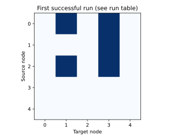

Experiment: exp_f17ae4e75b6b4e33 · Status: succeeded
Protocol SHA256: dc86c3131ab100d1d22ed95a71cc7d49502f41503b1f02a1c9d3b6aad1c7891e
1 / 1 runs succeeded.
| Dataset | Method | Runs | Mean F1 | Mean SHD | Mean seconds |
|---|---|---|---|---|---|
| ds_7997c9acdf844452 | notears | 1 | 1.0 | 0.0 | 2.2918706480413675 |
Blank recovery metrics mean no ground truth; they are not zeros. Aggregation is within each dataset across model seeds.

[]
{
"aggregation_unit": "model seeds within each dataset; independent dataset summaries separately",
"dataset_checksums": {
"ds_7997c9acdf844452": "60beb6b6b7be4763e639fb93f2495eb32f5d663c71edcb1102943bd08fc3a8c5"
},
"dataset_ids": [
"ds_7997c9acdf844452"
],
"evaluation_level": "region",
"exclude_self": true,
"methods": [
{
"device": "cpu",
"name": "notears",
"params": {
"lambda1": 0.1,
"max_iter": 20,
"w_threshold": 0.3
}
}
],
"metric_version": "region-v1-reversal-cost-one-exclude-self",
"schema_version": "1",
"seeds": [
42
],
"timeout_seconds": 120,
"title": "Docker live acceptance 20261115"
}
summary.json and runs.csv contain run IDs. Each run has an attempt directory containing configuration, environment, logs, graph, metrics and a SHA256 manifest.
These are method-specific graph estimates. Directional predictions alone do not establish physiological causality. Demonstration budgets are not convergence guarantees.